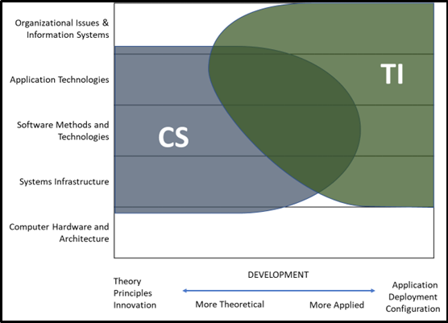
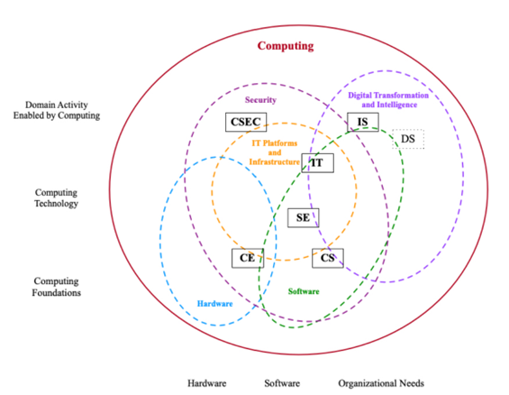
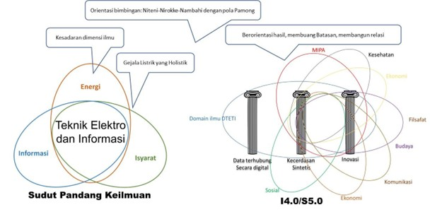
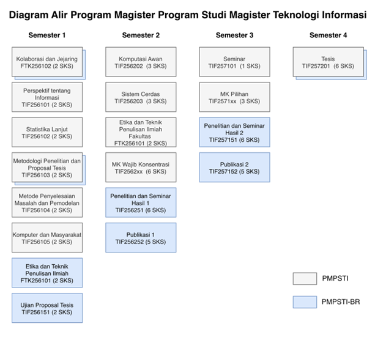

| No | Profil Lulusan | Deskripsi Profil |
|---|---|---|
| 1 | Akademisi dan peneliti di bidang teknologi informasi | Pengajar dan peneliti yang tergabung dalam suatu instansi pendidikan, misalnya universitas, politeknik, sekolah tinggi, dan institut. Pengajar dan peneliti yang menguasai metode penelitian, memiliki kepekaan terhadap masalah nyata, dan pembelajar mandiri. |
| 2 | Pegawai pemerintah di bidang teknologi informasi dengan kelas jabatan 8 | Pegawai instansi pemerintahan pusat maupun daerah yang secara mandiri mengintegrasikan teknologi informasi dengan fungsi-fungsi manajerial untuk mendukung pengambilan keputusan, optimalisasi layanan publik, serta pencapaian tujuan organisasi secara efektif dan efisien. |
| 3 | CIO | Sebagai pengambil kebijakan yang bertanggung jawab mempromosikan TIK sebagai sarana peningkatan kualitas birokrasi pemerintahan, baik pada level strategis maupun operasional. |
| 4 | Information Security Director | Ahli dalam mengembangkan perencanaan strategi TI serta membuat desain, mengembangkan, mengimplementasikan dan melakukan pengendalian keamanan pada jaringan komputer dan telekomunikasi. |
| 5 | Senior IT Advisor | Ahli dalam mengatur keberlanjutan perencanaan dan desain proyek TIK, memimpin keberlanjutan penelitian, menyediakan konsultasi dan memberikan saran kepada klien mengenai permasalahan yang kompleks. |
| 6 | Mobile and IoT Director | Ahli dalam mengidentifikasi, merancang dan menerangkan teknis wearable computing dan Internet of Things (IoT) serta teknologi smart city. |
2 Struktur Kurikulum
2.1 Rumusan Profil Lulusan (PL)
Pengembangan kurikulum Program Magister Program Studi Teknologi Informasi dilakukan agar senantiasa selaras dengan visi dan misi Departemen Teknik Elektro dan Teknologi Informasi, Fakultas Teknik, Universitas Gadjah Mada. Standar kompetensi lulusan dirumuskan secara langsung berlandaskan visi dan misi tersebut, sehingga kurikulum PMPSTI 2022 Versi Revisi-2 tidak hanya menunjang pencapaian kompetensi yang telah ditetapkan, tetapi juga memastikan keterkaitan erat antara arah pengembangan akademik dengan tujuan kelembagaan. Di samping itu, kurikulum ini disusun dengan memperhatikan kebutuhan pengguna lulusan serta mempertimbangkan masukan dari dewan penasehat (advisory board). Kesesuaian standar kompetensi lulusan (SKL) dengan visi dan misi lembaga tertuang secara lebih rinci pada Bagian 2.2.1.
Struktur kurikulum dijabarkan secara lengkap mencakup profil lulusan, capaian pembelajaran lulusan, pemetaan capaian pembelajaran lulusan terhadap bahan kajian dan mata kuliah. Lulusan Program Magister Program Studi Teknologi Informasi dapat bekerja dalam beberapa bidang seperti yang tertulis pada Tabel 2.1.
Untuk mewujudkan profil lulusan sesuai pada Tabel 2.1 dirumuskan Standar Kompetensi Lulusan (SKL) atau Program Educational Objective (PEO) sesuai dengan visi dan misi Departemen Teknik Elektro dan Teknologi Informasi (DTETI) yang diturunkan dari visi dan misi Fakultas Teknik UGM yang tercantum pada Bagian 1.1.2.
2.2 Rumusan Standar Kompetensi Lulusan (SKL) dan Capaian Pembelajaran Lulusan (CPL), atau PEO dan PO
2.2.1 Standar Kompetensi Lulusan (SKL)
SKL Program Magister Program Studi Teknologi Informasi (PMPSTI) menjabarkan mengenai profil profesional yang diharapkan dimiliki oleh lulusan setelah mereka menjadi alumni dengan durasi berkisar tiga hingga lima tahun. Profil tersebut adalah hasil dari diskusi dan telah disepakati oleh pemangku kepentingan (stakeholders). Terdapat 2 standar kompetensi lulusan (SKL) sebagai berikut:
SKL1 Karier (career): Sukses dalam karir teknis atau profesional yang bercirikan memiliki integritas dalam aspek kompetensi teknologi informasi atau bidang terkait yang disertai dengan kemampuan riset yang kuat..
SKL2 Karakter (character): Memiliki kepemimpinan yang kuat, standar etika yang tinggi, dan pembelajaran sepanjang hayat untuk mempertahankan keunggulan dalam inovasi.
Profil profesional yang dituangkan dalam SKL tersebut sejalan dengan visi dan misi Fakultas Teknik dan Universitas Gadjah Mada. Terkait visi UGM yakni unggul, inovatif, dan bermanfaat bagi masyarakat yang ditunjukkan pada SKL1 Karier, yakni memiliki integritas, kompetensi bidang, dan kemampuan riset yang kuat. Sedangkan SKL 2 Karakter, mendukung visi UGM, yakni pengabdian pada kepentingan bangsa dan kemanusiaan, dengan menjunjung tinggi etika dan semangat pembelajaran sepanjang hayat untuk tetap dapat menjadi pribadi yang unggul dan inovatif. Demikian juga dengan visi FT yakni kemandirian IPTEK dalam mendukung peradaban baru, diwujudkan oleh SKL1 Karier, yaitu lulusan dituntut sukses dalam karir teknis/profesional dengan integritas dan kompetensi TI, serta kemampuan riset yang kuat. Sedangkan SKL 2 Karakter, mendukung visi FT, yakni menghasilkan lulusan kompeten, berintegritas, berjiwa kepemimpinan, beretika tinggi, sehingga mampu berkolaborasi dalam jejaring multidisiplin.
SKL1 dan SKL2 bisa diukur pada saat seorang alumni lulus dan memasuki bidang pekerjanya yang akan dirasakan secara langsung oleh pemberi kerja. Proses pengukuran SKL termasuk pada salah satu siklus PDCA jangka panjang yaitu 5 tahunan dengan metode survei. Selain itu, SKL dapat juga terwakili oleh capaian pembelajaran lulusan (CPL) sesuai dengan yang tertulis pada Bagian 2.2.2. Dengan ketercapaian CPL diharapkan nantinya akan tercapai juga SKL1 dan SKL2 seperti yang tertera pada pemetaan dari CPL terhadap SKL two cars yang telah didefinisikan.
Kurikulum PMPSTI pada dasarnya melanjutkan apa yang telah dirancang pada Program Sarjana Teknologi Informasi DTETI FT UGM. Hal ini mempertimbangkan kesinambungan jenjang kependidikan antara program sarjana dan magister yang ada di departemen. Perbedaan mendasar antara SKL PMPSTI dengan program sarjana terletak pada kemampuan lulusan untuk melakukan penelitian dengan hasil yang baik dan dengan menerapkan metode ilmiah yang benar dan mengarah pada ranah profesionalisme dengan karakter kepemimpinan yang kuat, standar etika yang tinggi, dan pembelajaran sepanjang hayat.
Komite Kurikulum dan Pengurus DTETI FT UGM menilai bahwa kemampuan untuk memimpin (leadership), memiliki standar etika dan integritas yang tinggi, serta kemauan untuk belajar sepanjang (life-long learning) menjadi modal utama yang berharga untuk membentuk alumni yang mampu beradaptasi dengan kompleksitas dunia kerja dan perkembangan teknologi yang sangat pesat di bidang teknologi informasi. Hal-hal tersebut terangkum dalam SKL yang kedua, yakni Karakter. Selain hal-hal tersebut, lulusan DTETI FT UGM juga perlu menguasai ilmu-ilmu dasar dengan baik dan memiliki kompetensi yang sesuai dengan bidang ilmu yang ditekuni. Hal-hal tersebut terangkum dalam SKL yang pertama, yakni Karier. Untuk mendukung terciptanya profil lulusan yang memiliki karakter dan karier yang kuat, Komite Kurikulum dan Pengurus DTETI FT UGM menyusun nilai-nilai (values) yang menjadi acuan dosen, mahasiswa, dan tenaga kependidikan dalam melaksanakan kegiatan belajar mengajar, bekerja sama, dan berinteraksi di DTETI FT UGM. Nilai-nilai tersebut dirumuskan dalam jargon “ETHOS for Integrity”, dengan penjelasan sebagai berikut:
Excellence: sivitas akademika DTETI FT UGM tidak hanya memastikan bahwa tugas dan amanah selesai dilaksanakan, tapi juga berusaha menyempurnakan, serta menjadi yangterbaik dan berdedikasi tinggi di bidang yang mereka tekuni.
Teamwork: sivitas akademika DTETI menyadari bahwa mampu bekerja dalam tim adalah ruh dari sebuah organisasi yang tidak hanya mampu melaksanakan fungsinya, tapi mampu membawa perubahan dan menginspirasi lingkungan sekitarnya.
Harmony: sivitas akademika DTETI menyadari bahwa kesuksesan dapat dicapai dengan tetap memperhatikan harmoni dan keseimbangan, keseimbangan antara pekerjaan dan keluarga, keseimbangan antara hak dan kewajiban, keseimbangan antara kesehatan jiwa dan kesehatan raga.
Optimistic: sivitas akademika DTETI selalu melihat seluruh tantangan dengan penuh optimis, sebab mereka meyakini bahwa tidak ada kata gagal, yang ada adalah belajar dan sukses.
Smart: sivitas akademika DTETI menjadi sumber inspirasi dengan berbagai inovasi, berusaha berkontribusi untuk menyelesaikan permasalahan masyarakat dan bangsa, menjadi bagian dari solusi, bukan bagian dari masalah.
Integrity: sivitas akademika DTETI memiliki keyakinan yang kuat akan nilai-nilai moral yang menjadi acuan bekerja di ranah profesional serta bekerja sama dalam bingkai berbangsa dan bernegara.
2.2.2 Capaian Pembelajaran Lulusan (CPL)
Capaian pembelajaran lulusan (CPL) diturunkan dari kedua SKL yang telah dijabarkan pada Bagian 2.2.1, yang terdiri dari CPL yang mendukung SKL career dan SKL character. CPL yang ditetapkan berikut merujuk pada CPL yang ditetapkan oleh Indonesian Accreditation Board for Engineering Education (IABEE).
CPL kelompok Karir (career):
CPL kelompok karakter (character):
Seusai panduan penyusunan kurikulum 2021 yang diterbitkan oleh Direktorat Jenderal Pendidikan Tinggi Kementerian Pendidikan dan Kebudayaan, Capaian Pembelajaran Lulusan (CPL) atau Student Outcomes (SO) harus mengacu pada jenjang kualifikasi KKNI dan SNPT. CPL terdiri dari unsur sikap, keterampilan umum, keterampilan khusus, dan pengetahuan. Unsur sikap dan keterampilan umum mengacu pada SPT sebagai standar minimal, yang memungkinkan ditambah oleh program studi untuk memberi ciri lulusan perguruan tingginya. Sedangkan unsur keterampilan khusus dan pengetahuan dirumuskan dengan mengacu pada deskriptor KKNI sesuai dengan jenjang pendidikannya. Hubungan CPL dengan standar SNPT dapat dilihat pada Tabel 2.2 berikut ini.
| CPL | Sikap | Pengetahuan | Keterampilan Umum | Keterampilan Khusus |
|---|---|---|---|---|
| Pengetahuan dan wawasan rekayasa (Engineering knowledge) | ✓ | |||
| Pengembangan Solusi Teknik (Development of Engineering Solution) | ✓ | |||
| Data, Eksperimen, dan Pemodelan (Data, Experiments and modeling) | ✓ | |||
| Pemanfaatan Alat Modern dan Teknologi Informasi (Modern Tools and IT Utilization) | ✓ | |||
| Komunikasi yang Efektif (Effective Communication) | ✓ | |||
| Pengetahuan tentang Masalah Kontemporer (Knowledge of Contemporary Issues) | ✓ | |||
| Teamwork, leadership, dan managerial | ✓ | |||
| Kesadaran akan Dampak Rekayasa dan Etika Profesional (Engineering Awareness and Professional Ethics) | ✓ | |||
| Pembelajaran berkelanjutan (Sustainable Learning) | ✓ |
Menurut Peraturan Presiden Republik Indonesia No. 8 Tahun 2012 tentang Kerangka Kualifikasi Nasional Indonesia (KKNI) Pasal 5(g), lulusan Magister Terapan dan Magister paling rendah setara dengan jenjang kedelapan. Oleh karena itu, student outcomes yang akan dicapai oleh program studi harus merepresentasikan deskripsi jenjang kualifikasi KKNI kedelapan. Adapun matriks yang menunjukkan relasi antara SO dan jenjang KKNI kedelapan ditunjukkan oleh Tabel 2.3.
| Jenjang KKNI ke-8 | Mampu mengembangkan pengetahuan, teknologi, dan atau seni di dalam bidang keilmuannya atau praktik profesionalnya melalui riset, hingga menghasilkan karya inovatif dan teruji. | Mampu memecahkan permasalahan sains, teknologi, dan atau seni di dalam bidang keilmuannya melalui pendekatan inter atau multidisipliner. | Mampu mengelola riset dan pengembangan yang bermanfaat bagi masyarakat dan keilmuan, serta mampu mendapat pengakuan nasional atau internasional. |
|---|---|---|---|
| Pengetahuan dan wawasan rekayasa (Engineering knowledge) | ✓ | ||
| Pengembangan Solusi Teknik (Development of Engineering Solution) | ✓ | ||
| Data, Eksperimen, dan Pemodelan (Data, Experiments and Modeling) | ✓ | ||
| Pemanfaatan Alat Modern dan Teknologi Informasi (Modern Tools and IT Utilization) | ✓ | ||
| Komunikasi yang Efektif (Effective Communication) | ✓ | ||
| Pengetahuan tentang Masalah Kontemporer (Knowledge of Contemporary Issues) | ✓ | ||
| Teamwork, leadership, dan managerial | ✓ | ||
| Kesadaran akan Dampak Rekayasa, Tanggung Jawab Profesional dan Etis (Engineering Awareness, Professionalism, and Ethical Responsibility) | ✓ | ||
| Pembelajaran berkelanjutan (Sustainable Learning) | ✓ |
2.3 Penetapan Bahan Kajian
Kurikulum MTI 2022 versi Revisi-2 merupakan pembaruan kurikulum Magister Teknologi Informasi 2017 dengan mempertimbangkan beberapa aspek. Pertama, kesinambungan dengan Program Sarjana Program Studi Teknologi Informasi (PSPSTIF). Kesinambungan yang dimaksud adalah adanya kesesuaian konsentrasi PMPSTI yang merupakan spesialisasi dari jalur karir (career path) yang ada di PSPSTIF. Terdapat empat konsentrasi PMPSTI, yakni Human-centered Software Engineering (HcSE) yang merupakan spesialisasi dari jalur karir Software engineer bagi keahlian Rekayasa Perangkat Lunak PSPSTIF, Data Analytics and Pervasive Intelligence yang merupakan spesialisasi dari jalur karir IT Professional dan Information Worker bagi keahlian Rekayasa Sistem Informasi, dan Cybersecurity yang merupakan spesialisasi dari jalur karir Network & Infrastructure Architect bagi keahlian Rekayasa Sistem Komputer. Adapun konsentrasi keempat adalah smart-government yang merupakan konsentrasi penciri PMPSTI DTETI UGM.
Aspek kedua, Kurikulum MTI 2022 versi Revisi-2 juga berkaca pada Kurikulum PSPSTIF yang telah lebih dahulu diperbarui pada tahun 2021 yang mengacu pada proses akreditasi internasional Accreditation Board for Engineering and Technology (ABET) dan Indonesian Accreditation Board for Engineering (IABEE) yang disesuaikan dengan kebutuhan program magister. Kedua akreditasi tersebut menyatakan bahwa penguasaan ilmu dasar harus diperkuat pada bidang ilmu teknologi informasi untuk dapat beradaptasi pada perubahan cepat khususnya pada ilmu teknologi informasi dan Industry 4.0. Hal ini diperkuat dengan adanya testimoni lulusan melalui tracer study dan hasil audit AMI yang secara eksplisit mengemukakan bahwa kurikulum 2017 kurang dalam matematika dan statistika.
Aspek yang terakhir yang menjadi bahan pertimbangan pembaruan kurikulum adalah amanat Peraturan Rektor No. 18 Tahun 2019 tentang Penyelenggaraan Program Pascasarjana Berbasis Riset (by Research) di Lingkungan Universitas Gadjah Mada.
Dalam menetapkan Kurikulum MTI 2022 versi Revisi-2, tim memperhatikan perpotongan (intersection) dengan program studi lain, khususnya keilmuan program studi Ilmu Komputer yang dianggap sangat dekat dengan keilmuan Teknologi Informasi. Hal ini dilakukan untuk mengetahui tujuan dan diferensiasi dengan PMPSTI. Mengacu pada Computing Curricula (The Joint Task Force for Computing Curricula, 2005), perbedaan keilmuan Ilmu Komputer dan Teknologi Informasi digambarkan pada Gambar 2.1 .

Ilmu Komputer menekankan pada sebagian besar kebutuhan komputasi yang dilakukan oleh sebuah komputer termasuk di dalamnya teknik pengembangan perangkat lunak, infrastruktur, hingga teknologi aplikasi. Namun demikian, ilmu komputer tidak mendiskusikan bagaimana sebuah solusi komputasi didistribusikan, dikelola, dan juga disesuaikan dengan kebutuhan pengguna. Dengan kata lain, hal tersebutlah yang dipenuhi di Program Studi Teknologi Informasi. Program Magister Program Studi Teknologi Informasi lebih melekat pada penerapan yang tidak melupakan aspek keteknikan yang lebih menekankan bagaimana sebuah solusi TIK dibuat, didistribusikan, dan dikelola oleh manusia.
Dilihat dari level komputasi yang dibutuhkan (fondasi/dasar, teknologi, domain aktivitas) dan komponen yang menjadi fokus (domain hardware/software, dan kebutuhan organisasi), keilmuan komputasi terbagi tidak hanya menjadi Ilmu Komputer (CS) dan Teknologi Informasi (IT) saja, tetapi juga terdapat Keamanan Siber (CSEC), Sistem Informasi (SI), Rekayasa Perangkat Lunak (SE), dan data science (DS) seperti yang ditunjukkan pada Gambar 2.2 . CSEC berpotongan dengan Teknologi Informasi dalam hal platform & Infrastruktur TIK dan keamanan. Perpotongan tersebut, bila ditambahkan komponen software, akan membentuk keilmuan SE. Untuk mengakomodir kebutuhan organisasi yang berorientasi pada transformasi digital dan intelegensia, maka Teknologi Informasi akan berpotongan dengan DS. Perpotongan-perpotongan tersebut tidaklah absolut dan setiap keilmuan akan memiliki porsi yang berbeda-beda.

PMPSTI mengakomodir perpotongan topik-topik spesifik namun masih berkaitan dengan keilmuan Teknologi Informasi. Berdasarkan kajian tersebut, ditetapkan bahan pengajaran untuk membentuk 4 konsentrasi PMPSTI, yakni NC (Network and Cybersecurity), HcSE (Human-centered Software Engineering), SG (Smart Government), dan DAPI (Data analytics and Pervasive Intelligence). Konsentrasi NC akan berfokus pada infrastruktur, jaringan dan domain keamanan. Konsentrasi HcSE berfokus pada perekayasaan perangkat lunak. Konsentrasi SG dan DAPI berfokus pada transformasi digital dan intelegensia untuk memenuhi kebutuhan spesifik yang ada pada organisasi, misalnya mitra lembaga/badan pemerintahan ataupun industri.
Sedangkan relasi antara keilmuan PMPSTI terhadap ilmu lain dalam kerangka i4.0 dan s5.0 diilustrasikan Gambar 2.3. Terlihat bahwa keilmuan PMPSTI sebagai bagian dari keilmuan DTETI dapat memiliki interseksi dengan berbagai bidang keilmuan.

2.4 Penetapan Mata Kuliah
Kurikulum PMPSTI versi Revisi-2 terdiri dari dua skema yaitu skema berbasis perkuliahan dan skema berbasis riset. Skema berbasis perkuliahan merupakan skema yang telah dijalankan selama ini, sedangkan kurikulum berbasis riset merupakan skema baru sesuai dengan Peraturan Rektor UGM No. 18 Tahun 2019.
2.4.1 Kurikulum berbasis perkuliahan (by course)
Kurikulum PMPSTI berbasis perkuliahan dijabarkan dalam bentuk mata kuliah dengan bobot keseluruhan 36 SKS yang terdiri dari MK wajib umum, MK wajib konsentrasi, MK pilihan, seminar, dan Tesis. Pembagian bobot SKS dapat dilihat pada Tabel 2.4.
| Mata Kuliah | SKS |
|---|---|
| MK Wajib Umum | 20 |
| MK Wajib Konsentrasi | 6 |
| MK Pilihan | 3 |
| Seminar | 1 |
| Tesis + Ujian Tesis | 6 |
| Total | 36 |
Struktur mata kuliah pada setiap semester ditunjukkan pada Tabel 2.5 dengan total bobot 36 SKS.
| NO | KODE MK | NAMA MK | SIFAT | SKS |
|---|---|---|---|---|
| SEMESTER 1 | ||||
| 1 | FTK 256102 | Kolaborasi dan Jejaring | Wajib Umum | 2 |
| 2 | TIF 256101 | Perspektif tentang Informasi | Wajib Umum | 2 |
| 3 | TIF 256102 | Statistika Lanjut | Wajib Umum | 2 |
| 4 | TIF 256103 | Metodologi Penelitian dan Proposal Tesis | Wajib Umum | 2 |
| 5 | TIF 256104 | Metode Penyelesaian Masalah dan Pemodelan | Wajib Umum | 2 |
| 6 | TIF 256105 | Komputer dan Masyarakat | Wajib Umum | 2 |
| Jumlah SKS: 12 | ||||
| SEMESTER 2 | ||||
| 1 | TIF 256202 | Komputasi Awan | Wajib Umum | 3 |
| 2 | TIF 256203 | Sistem Cerdas | Wajib Umum | 3 |
| 3 | FTK 256101 | Etika dan Teknik Penulisan Ilmiah | Wajib Umum | 2 |
| 4 | TIF 2562xx | MK Wajib Konsentrasi 1 | Wajib Konsentrasi | 3 |
| 5 | TIF 2562xx | MK Wajib Konsentrasi 2 | Wajib Konsentrasi | 3 |
| Jumlah SKS: 14 | ||||
| SEMESTER 3 | ||||
| 1 | TIF 257101 | Seminar | Seminar | 1 |
| 2 | TIF 2571xx | MK Pilihan 1 | Pilihan | 3 |
| Jumlah SKS: 4 | ||||
| SEMESTER 4 | ||||
| 1 | TIF 257201 | Tesis | Tesis | 6 |
| Jumlah SKS: 6 | ||||
| Total SKS: 36 | ||||
Kurikulum PMPSTI memiliki 4 konsentrasi sebagaimana berdasarkan bahan kajian di atas dan masukan dari advisory board dan pengguna lulusan, yaitu:
Konsentrasi Analisis data dan kecerdasan Tersebar (Data analytics and Pervasive Intelligence = DAPI)
Konsentrasi Rekayasa Perangkat Lunak berpusat pada Manusia (Human-centered Software Engineering = HcSE)
Konsentrasi Pemerintahan Cerdas (Smart Government = SG)
Konsentrasi Keamanan Jaringan (Network and Cybersecurity = NC)
Mahasiswa PMPSTI wajib memilih satu dari empat konsentrasi yang ada. Pada semester kedua mahasiswa diwajibkan mengambil 2 mata kuliah wajib konsentrasi dengan total bobot 6 SKS, kemudian pada semester berikutnya mahasiswa akan mengambil 1 mata kuliah pilihan konsentrasi dengan total bobot 3 SKS, sesuai dengan struktur pada Tabel 2.5. Adapun mata kuliah wajib konsentrasi dan pilihan konsentrasi ditunjukkan pada Tabel 2.6 dan Tabel 2.7. PMPSTI menawarkan 6 mata kuliah pilihan untuk masing-masing konsentrasi, bergantung pada konsentrasi yang dipilih mahasiswa. Namun, hanya mata kuliah dengan jumlah minimum 3 peserta yang akan diselenggarakan.
| No. | Kode MK | Nama Mata Kuliah | SKS | Sifat |
|---|---|---|---|---|
| 1 | TIF 256211 | Gudang dan Penambangan Data (Data Warehouse and Data Mining) | 3 | Wajib Konsentrasi DAPI |
| 2 | TIF 256212 | Komputasi Tersebar (Pervasive Computing) | 3 | Wajib Konsentrasi DAPI |
| 3 | TIF 256221 | Rekayasa Kebutuhan (Requirement Engineering) | 3 | Wajib Konsentrasi HcSE |
| 4 | TIF 256222 | Arsitektur dan Perancangan Perangkat Lunak (Software Architecture and Design) | 3 | Wajib Konsentrasi HcSE |
| 5 | TIF 256231 | Pengelolaan Data untuk Pemerintahan (Data Management for Government) | 3 | Wajib Konsentrasi SG |
| 6 | TIF 256232 | Pemerintahan Elektronik (e-Government) | 3 | Wajib Konsentrasi SG |
| 7 | TIF 256241 | Keamanan Teknologi Informasi (Information Technology Security) | 3 | Wajib Konsentrasi NC |
| 8 | TIF 256242 | Jaringan Komputer Lanjut (Advanced Computer Network) | 3 | Wajib Konsentrasi NC |
| No. | Kode MK | Nama Mata Kuliah | SKS | Sifat |
|---|---|---|---|---|
| 1 | TIF 257111 | Interoperabilitas Lanjut (Advanced Interoperability) | 3 | Pilihan DAPI |
| 2 | TIF 257112 | Jaringan Nirkabel dan Bergerak (Wireless and Mobile Networking) | 3 | Pilihan DAPI |
| 3 | TIF 257113 | Visi Komputer (Computer Vision) | 3 | Pilihan DAPI |
| 4 | TIF 257114 | Operasi Riset (Research Operation) | 3 | Pilihan DAPI |
| 5 | TIF 257115 | Kecerdasan Bisnis (Business Intelligence) | 3 | Pilihan DAPI |
| 6 | TIF 257116 | Pengembangan Aplikasi Peranti Bergerak Lanjut (Advanced Mobile Application Development) | 3 | Pilihan DAPI |
| 7 | TIF 257121 | Interaksi Manusia dan Komputer Lanjut (Advanced Human-Computer Interaction) | 3 | Pilihan HcSE |
| 8 | TIF 257122 | Antar Muka Alamiah (Natural User Interface) | 3 | Pilihan HcSE |
| 9 | TIF 257123 | Rekayasa Faktor Manusia dan Ergonomi (Human Factor Engineering and Ergonomics) | 3 | Pilihan HcSE |
| 10 | TIF 257124 | Pengujian dan Implementasi Perangkat Lunak (Software Testing and Implementation) | 3 | Pilihan HcSE |
| 11 | TIF 257125 | Pemodelan Sistem dan Perangkat Lunak (System and Software Modelling) | 3 | Pilihan HcSE |
| 12 | TIF 257126 | Aplikasi Kontemporer (Contemporary Application) | 3 | Pilihan HcSE |
| 13 | TIF 257131 | Perencanaan Strategis Teknologi Informasi (IT Strategic Planning) | 3 | Pilihan SG |
| 14 | TIF 257132 | Manajemen Proyek Teknologi Informasi (IT Project Management) | 3 | Pilihan SG |
| 15 | TIF 257133 | Audit Teknologi Informasi (Audit of Information Technology) | 3 | Pilihan SG |
| 16 | TIF 257134 | Kepemimpinan TIK (IT Leadership) | 3 | Pilihan SG |
| 17 | TIF 257135 | Teknologi untuk Kota Cerdas (Technology for Smart City) | 3 | Pilihan SG |
| 18 | TIF 257136 | Manajemen Perubahan dan Resiko TI (IT Change and Risk Management) | 3 | Pilihan SG |
| 19 | TIF 257141 | Keamanan dan Integritas Data Lanjut (Advanced Data Security and Integrity) | 3 | Pilihan NC |
| 20 | TIF 257142 | Keamanan Jaringan Komputer (Network Security) | 3 | Pilihan NC |
| 21 | TIF 257143 | Keamanan Peranti Bergerak dan IoT (Mobile and IoT Security) | 3 | Pilihan NC |
| 22 | TIF 257144 | Keamanan Komputasi Awan (Cloud Security) | 3 | Pilihan NC |
| 23 | TIF 257145 | Kriptografi (Cryptography) | 3 | Pilihan NC |
| 24 | TIF 257146 | Teknologi Blockchain (Blockchain Technology) | 3 | Pilihan NC |
Peta Kurikulum
Tabel 2.8 menampilkan pemetaan dari semua mata kuliah dari kurikulum 2022 Versi Revisi - 2 ke CPL.
| Sem | Kode | Nama MK | SKS | 1 | 2 | 3 | 4 | 5 | 6 | 7 | 8 | 9 |
|---|---|---|---|---|---|---|---|---|---|---|---|---|
| 1 | FTK256102 | Kolaborasi dan Jejaring | 2 | ✓ | ✓ | ✓ | ||||||
| 1 | TIF 256101 | Perspektif Informasi | 2 | ✓ | ✓ | |||||||
| 1 | TIF 256102 | Statistika Lanjut | 2 | ✓ | ✓ | ✓ | ||||||
| 1 | TIF 256103 | Metodologi, Etika Penelitian dan Proposal Tesis | 2 | ✓ | ✓ | |||||||
| 1 | TIF 256104 | Metode Penyelesaian Masalah dan Pemodelan | 2 | ✓ | ✓ | |||||||
| 1 | TIF 256105 | Komputer dan Masyarakat | 2 | ✓ | ✓ | ✓ | ✓ | |||||
| 2 | FTK256101 | Etika dan Teknik Penulisan Ilmiah | 2 | ✓ | ✓ | ✓ | ||||||
| 2 | TIF 256202 | Komputasi Awan | 3 | ✓ | ✓ | ✓ | ✓ | |||||
| 2 | TIF 256203 | Sistem Cerdas | 3 | ✓ | ✓ | ✓ | ✓ | |||||
| 2 | TIF 256211 | Gudang dan Penambangan Data | 3 | ✓ | ||||||||
| 2 | TIF 256212 | Komputasi Tersebar | 3 | ✓ | ✓ | ✓ | ✓ | |||||
| 2 | TIF 256221 | Rekayasa Kebutuhan | 3 | ✓ | ✓ | ✓ | ||||||
| 2 | TIF 256222 | Arsitektur dan Perancangan Perangkat Lunak | 3 | ✓ | ✓ | ✓ | ✓ | ✓ | ||||
| 2 | TIF 256231 | Pengolahan Data Untuk Pemerintahan | 3 | ✓ | ✓ | ✓ | ||||||
| 2 | TIF 256232 | Pemerintahan Elektronis | 3 | ✓ | ✓ | ✓ | ||||||
| 2 | TIF 256241 | Keamanan Teknologi Informasi | 3 | ✓ | ✓ | ✓ | ✓ | |||||
| 2 | TIF 256242 | Jaringan Komputer Lanjut | 3 | ✓ | ✓ | |||||||
| 3 | TIF 257101 | Seminar | 1 | ✓ | ✓ | ✓ | ||||||
| 3 | TIF 257111 | Interoperabilitas Lanjut | 3 | ✓ | ✓ | ✓ | ||||||
| 3 | TIF 257112 | Jaringan Nirkabel dan Bergerak | 3 | ✓ | ||||||||
| 3 | TIF 257113 | Visi Komputer | 3 | ✓ | ✓ | ✓ | ||||||
| 3 | TIF 257114 | Operasi Riset | 3 | ✓ | ✓ | |||||||
| 3 | TIF 257115 | Kecerdasan Bisnis | 3 | ✓ | ✓ | ✓ | ||||||
| 3 | TIF 257116 | Pengembangan Aplikasi Peranti Bergerak Lanjut | 3 | ✓ | ✓ | ✓ | ||||||
| 3 | TIF 257121 | Interaksi Manusia Dan Komputer Lanjut | 3 | ✓ | ✓ | ✓ | ||||||
| 3 | TIF 257122 | Antar Muka Alamia | 3 | ✓ | ✓ | ✓ | ||||||
| 3 | TIF 257123 | Rekayasa Faktor Manusia Dan Ergonomi | 3 | ✓ | ✓ | ✓ | ||||||
| 3 | TIF 257124 | Pengujian dan Implementasi Perangkat Lunak | 3 | ✓ | ✓ | |||||||
| 3 | TIF 257125 | System and Software Modelling | 3 | ✓ | ✓ | ✓ | ✓ | |||||
| 3 | TIF 257126 | Aplikasi Kontemporer | 3 | ✓ | ✓ | ✓ | ✓ | |||||
| 3 | TIF 257131 | Perencanaan Strategis Teknologi Informasi | 3 | ✓ | ✓ | ✓ | ✓ | |||||
| 3 | TIF 257132 | Manajemen Proyek Teknologi Informasi | 3 | ✓ | ✓ | ✓ | ||||||
| 3 | TIF 257133 | Audit Teknologi Informasi | 3 | ✓ | ✓ | ✓ | ||||||
| 3 | TIF 257134 | Kepemimpinan TIK | 3 | ✓ | ✓ | ✓ | ✓ | ✓ | ||||
| 3 | TIF 257135 | Teknologi Kota Cerdas | 3 | ✓ | ✓ | ✓ | ||||||
| 3 | TIF 257136 | Manajemen Perubahan dan Risiko TI | 3 | ✓ | ✓ | |||||||
| 3 | TIF 257141 | Keamanan dan Integritas Data Lanjut | 3 | ✓ | ✓ | |||||||
| 3 | TIF 257142 | Keamanan Jaringan Komputer | 3 | ✓ | ✓ | |||||||
| 3 | TIF 257143 | Keamanan Peranti Bergerak dan IoT | 3 | ✓ | ✓ | ✓ | ||||||
| 3 | TIF 257144 | Keamanan Komputasi Awan | 3 | ✓ | ✓ | ✓ | ||||||
| 3 | TIF 257145 | Kriptografi | 3 | ✓ | ✓ | ✓ | ||||||
| 3 | TIF 257146 | Teknologi Blockchain | 3 | ✓ | ✓ | |||||||
| 4 | TIF 257201 | Tesis | 6 | ✓ | ✓ | ✓ | ✓ | ✓ |
Mekanisme Pelaksanaan Tesis:
Tesis (6 SKS) dilaksanakan pada semester 4, yaitu sesudah mahasiswa dinyatakan lolos pada penilaian Publikasi dengan keterangan sebagai berikut.
Mahasiswa diwajibkan menyusun Naskah Tesis sebagai laporan penelitian Tesis sebagai syarat untuk pelaksanaan Ujian Tesis. Naskah Tesis harus disetujui dan ditandatangani oleh semua dosen pembimbing.
Ujian Pra Tesis (1 SKS) dilakukan pada semester 4. Berikut adalah rincian pelaksanaannya:
Naskah Tesis yang sudah disetujui tim pembimbing harus diserahkan ke bagian akademik.
Ujian Pra Tesis dilaksanakan secara lisan di hadapan dewan penguji.
Dewan penguji terdiri atas dosen-dosen Program Magister Program Studi Teknologi Informasi yang sesuai bidangnya.
Dewan Penguji memberi nilai pada sidang Ujian Pra Tesis. Jika nilai kurang dari B, maka mahasiswa wajib mengulang Ujian Pra Tesis.
Ujian Tesis yang memiliki bobot 4 SKS dijadwalkan untuk dilaksanakan pada semester keempat. Berikut merupakan rincian pelaksanaannya secara lebih mendetail:
Naskah Tesis yang sudah direvisi berdasarkan masukan-masukan pada ujian pra Tesis dan sudah disetujui oleh tim pembimbing harus diserahkan ke bagian akademik.
Ujian Tesis dilaksanakan secara lisan di hadapan dewan penguji.
Dewan penguji terdiri atas dosen-dosen Program Magister Program Studi Teknologi Informasi dan/atau penguji dari luar Prodi yang sesuai bidangnya.
Dewan Penguji memberi nilai pada sidang Ujian Tesis bedasarkan Naskah dan ujian lisan. Jika nilai kurang dari B, maka mahasiswa wajib mengulang Ujian Tesis.
Naskah Tesis hasil revisi berdasarkan masukan dewan penguji Tesis akan dinilai oleh Dosen Pembimbing Tesis dengan bobot 1 SKS.
2.4.2 Kurikulum berbasis riset (By Research)
Kurikulum PMPSTI-BR dijabarkan dalam bentuk mata kuliah dengan bobot keseluruhan 36 SKS. Pembagian bobot SKS dapat dilihat pada Tabel 2.9. Sedangkan pemetaan mata kuliah PMPSTI-BR terhadap CPL untuk setiap semesternya terdapat pada Tabel 2.10. Komposisi kegiatan perkuliahan dan penelitian didasarkan pada Peraturan Rektor UGM No. 18 Tahun 2019 tentang Penyelenggaraan Program Pascasarjana Berbasis Riset.
| Mata Kuliah | SKS | Kegiatan |
|---|---|---|
| MATA KULIAH WAJIB | ||
| Metodologi, Etika Penelitian dan Proposal Tesis | 2 | Perkuliahan |
| Kolaborasi dan Jejaring (Collaboration and Networking) | 2 | Perkuliahan |
| Etika dan Teknik Penulisan Ilmiah | 2 | Perkuliahan |
| Sub total | 6 | |
| MATA KULIAH PENELITIAN | ||
| Ujian Proposal Tesis | 2 | Penelitian |
| Penelitian dan Seminar Hasil 1 (DAPI, HcSE, SG, NC) | 6 | Penelitian |
| Publikasi 1 | 5 | Penelitian |
| Penelitian dan Seminar Hasil 2 (DAPI, HcSE, SG, NC) | 6 | Penelitian |
| Publikasi 2 | 5 | Penelitian |
| Tesis MBR | 6 | Penelitian |
| Sub total | 30 |
| Sem | SKS | Kode | Mata Kuliah | 1 | 2 | 3 | 4 | 5 | 6 | 7 | 8 | 9 |
|---|---|---|---|---|---|---|---|---|---|---|---|---|
| 1 | 2 | FTK256102 | Kolaborasi dan Jejaring | ✓ | ✓ | ✓ | ||||||
| 1 | 2 | FTK256101 | Etika dan Teknik Penulisan Ilmiah | ✓ | ✓ | ✓ | ||||||
| 1 | 2 | TIF256103 | Metodologi, Etika Penelitian dan Proposal Tesis | ✓ | ✓ | ✓ | ||||||
| 1 | 2 | TIF256151 | Ujian Proposal Tesis | ✓ | ✓ | ✓ | ||||||
| 2 | 6 | TIF256251 | Penelitian dan Seminar Hasil 1 (DAPI, HcSE, SG, NC) | ✓ | ✓ | ✓ | ✓ | |||||
| 2 | 5 | TIF256252 | Publikasi 1 | ✓ | ✓ | ✓ | ✓ | |||||
| 3 | 6 | TIF257151 | Penelitian dan Seminar Hasil 2 (DAPI, HcSE, SG, NC) | ✓ | ✓ | ✓ | ✓ | |||||
| 3 | 5 | TIF257152 | Publikasi 2 | ✓ | ✓ | ✓ | ✓ | |||||
| 4 | 6 | TIF257201 | Tesis | ✓ | ✓ | ✓ | ✓ |
Perkuliahan untuk PMPSTI-BR dilakukan pada semester 1. Sebagaimana mata kuliah pada kurikulum 2022 PMPSTI berbasis perkuliahan, mata kuliah pada PMPSTI-BR terdiri atas Mata kuliah kuliah wajib umum (6 SKS) yaitu Kolaborasi dan jejaring (2 SKS), Etika dan Teknik Penulisan Ilmiah (2 SKS), dan Metodologi, Etika Penelitian dan Proposal Tesis (2 SKS). Mata kuliah ini sama dengan apa yang ada di skema berbasis perkuliahan.
Selanjutnya, mahasiswa mengambil SKS kegiatan penelitian sebanyak 30 SKS, yang terdiri dari Ujian Proposal Tesis, Penelitian dan Seminar Hasil 1, Publikasi 1, Penelitian dan Seminar Hasil 2, Publikasi 2, dan Tesis.
Penelitian Tesis adalah kegiatan penelitian yang dilakukan mahasiswa selama menempuh studi. Penelitian Tesis meliputi kegiatan-kegiatan yang dijabarkan dari semester 1 sampai dengan semester 4 dengan keterangan sebagai berikut.
Ujian Proposal Tesis (2 SKS) dilakukan pada semester 1. Berikut adalah rincian pelaksanaannya.
Mahasiswa harus menyusun sebuah Proposal Penelitian Tesis sebagai syarat untuk pelaksanaan Ujian Proposal Tesis.
Selama menyusun dokumen proposal penelitian Tesis, mahasiswa disarankan menghubungi dosen yang sesuai dengan bidang yang diminati. Dokumen Proposal Tesis harus diserahkan ke bagian akademik pada akhir semester sebagai syarat melaksanakan Ujian Proposal Tesis.
Ujian Proposal Tesis dilakukan secara lisan di hadapan dewan penguji.
Dewan penguji terdiri atas dosen-dosen Program Magister Program Studi Teknologi Informasi yang sesuai di bidangnya.
Dewan Penguji memberi nilai pada sidang Ujian Proposal Tesis. Jika nilai kurang dari B, maka mahasiswa wajib mengulang.
Jika lulus Ujian Proposal Tesis, mahasiswa dapat melakukan kegiatan penelitiannya sesuai dengan topik yang disepakati, dosen pembimbing kemudian ditetapkan.
Penelitian dan Seminar Hasil 1 (6 SKS) dan Publikasi 1 (5 SKS) dilaksanakan pada semester 2. Kegiatan Penelitian dan Seminar Hasil 1 ini meliputi melakukan penelitian itu sendiri, dan menyusun dokumen Hasil Penelitian Tesis. Pada akhir semester, diselenggarakan Seminar Hasil 1, dengan rincian sebagai berikut.
Mahasiswa harus menyusun sebuah dokumen Hasil Penelitian Tesis yang pertama dengan arahan dosen pembimbing, sebagai syarat untuk pelaksanaan Seminar Hasil 1.
Dokumen Hasil Penelitian harus diserahkan ke bagian akademik pada akhir semester sebagai syarat melaksanakan Seminar Hasil 1.
Ujian seminar hasil 1 dilakukan secara lisan di hadapan dewan penguji.
Dewan penguji terdiri atas dosen pembimbing dan dosen-dosen Program Magister Program Studi Teknologi Informasi yang sesuai bidangnya.
Dewan Penguji memberi nilai Seminar Hasil 1. Jika nilai keseluruhan kurang dari B, maka mahasiswa wajib mengulang pelaksanaan Seminar Hasil 1.
Sedangkan, untuk Publikasi 1 (5 SKS) mahasiswa diwajibkan melakukan publikasi selama melakukan penelitian Tesis sesuai dengan Peraturan Rektor No. 18 Tahun 2019 dan Peraturan Rektor No. 23 Tahun 2024. Dalam hal ini, publikasi mahasiswa adalah sebagai syarat untuk menempuh Ujian Tesis.
Penilaian Publikasi merupakan penilaian terhadap hasil publikasi mahasiswa.
Publikasi mahasiswa dinyatakan sah jika naskah publikasi adalah hasil (sebagian atau keseluruhan) penelitian Tesis, dan ditulis dengan penulis mahasiswa tersebut dan semua dosen pembimbingnya. Mahasiswa tidak harus sebagai penulis pertama, dan harus mencantumkan dosen-dosen pembimbing sesuai dengan Rektor No. 23 Tahun 2024 Pasal 44. Pihak-pihak yang terlibat dalam penelitian itu dapat ditambahkan sebagai penulis selanjutnya.
Hasil publikasi mahasiswa dibuktikan dengan adanya prosiding yang telah dipresentasikan atau jurnal dengan naskah publikasi yang minimal telah mendapatkan Letter of Acceptance dari publisher terhadap naskah publikasi tersebut.
Penilaian Publikasi merupakan penilaian terhadap publikasi yang telah dihasilkan oleh. Pengecekan dilakukan untuk memastikan kredibilitas publisher dan bobot novelty dan/atau kontribusi paper.
Penilaian Publikasi dilakukan oleh institusi Program Studi berdasarkan rubrik penilaian.
Tim Penilaian Publikasi yang ditunjuk oleh Ketua Program Magister Program Studi Teknologi Informasi selanjutnya melakukan penilaian. Jika nilai keseluruhan kurang dari B, maka mahasiswa wajib melakukan publikasi lagi.
Bobot 5 SKS diberikan dengan pertimbangan penulisan paper untuk seminar internasional rata-rata membutuhkan waktu satu semester. Penulisan paper dilakukan oleh mahasiswa bersamaan ketika melakukan penelitian, yaitu semester 2 dan semester 3, dengan setiap satu semester diharapkan mampu menghasilkan satu paper seminar internasional. Paper untuk jurnal international lebih berat lagi, kira-kira butuh 2 semester untuk menghasilkan sebuah paper jurnal internasional. Penulisan paper ini membutuhkan telaah yang mendalam mengenai literature review yang harus dibaca, dasar teori, metodologi, pengolahan data, sampai membuat kesimpulan. Dengan tingkat kedalaman seperti itu, maka hal ini dianggap setara dengan kuliah 5 SKS. Penilaian publikasi terhadap paper tersebut dilakukan pada akhir semester 2.
Penelitian dan Seminar Hasil 2 (6 SKS) dan Publikasi 2 (5 SKS) dilaksanakan pada semester 3. Rincian dan pelaksanaan Penelitian dan Seminar Hasil 2 serta Publikasi 2 sama dengan Penelitian dan Seminar Hasil 1 serta Publikasi 1. Kegiatan ini merupakan kelanjutan dari kegiatan yang sama pada semester sebelumnya.
Tesis (6 SKS) dilaksanakan pada semester 4, yaitu sesudah mahasiswa dinyatakan lolos pada penilaian Publikasi dengan keterangan sebagai berikut.
Mahasiswa diwajibkan menyusun Naskah Tesis sebagai laporan penelitian Tesis sebagai syarat untuk pelaksanaan Ujian Tesis. Naskah Tesis harus disetujui dan ditandatangani oleh semua dosen pembimbing.
Ujian Pra Tesis (1 SKS) dilakukan pada semester 4. Berikut adalah rincian pelaksanaannya:
Naskah Tesis yang sudah disetujui tim pembimbing harus diserahkan ke bagian akademik.
Ujian Pra Tesis dilaksanakan secara lisan di hadapan dewan penguji.
Dewan penguji terdiri atas dosen-dosen Program Magister Program Studi Teknologi Informasi yang sesuai bidangnya.
Dewan Penguji memberi nilai pada sidang Ujian Pra Tesis. Jika nilai kurang dari B, maka mahasiswa wajib mengulang Ujian Pra Tesis.
Ujian Tesis yang memiliki bobot 4 SKS dijadwalkan untuk dilaksanakan pada semester keempat. Berikut merupakan rincian pelaksanaannya secara lebih mendetail:
Naskah Tesis yang sudah direvisi berdasarkan masukan-masukan pada ujian pra Tesis dan sudah disetujui oleh tim pembimbing harus diserahkan ke bagian akademik.
Ujian Tesis dilaksanakan secara lisan di hadapan dewan penguji.
Dewan penguji terdiri atas dosen-dosen Program Magister Program Studi Teknologi Informasi dan/atau penguji dari luar Prodi yang sesuai bidangnya.
Dewan Penguji memberi nilai pada sidang Ujian Tesis bedasarkan Naskah dan ujian lisan. Jika nilai kurang dari B, maka mahasiswa wajib mengulang Ujian Tesis.
Naskah Tesis hasil revisi berdasarkan masukan dewan penguji Tesis akan dinilai oleh Dosen Pembimbing Tesis dengan bobot 1 SKS.
Sistem penilaian untuk semua kegiatan penelitian yaitu proposal penelitian, penelitian dan seminar hasil 1, penelitian dan seminar hasil 2, publikasi 1, publikasi 2, dan Tesis menggunakan rubrik penilaian yang terdapat pada sistem informasi akademik PMPSTI.
2.4.3 Persamaan Dan Perbedaan dengan Magister Teknologi Informasi berbasis Perkuliahan
Persamaan dan perbedaan antara Program Magister Program Studi Teknologi Informasi Berbasis Penelitian (PMPSTI-BR) dengan Program Magister Program Studi Teknologi Informasi (PMPSTI) dinyatakan dalam Tabel 2.11. PMPSTI adalah Magister Teknologi Informasi yang berbasis kuliah (master by course) dan diakhiri dengan Tesis seperti yang selama ini berjalan. Sementara itu, pada PMPSTI-BR ada beberapa mata kuliah baru berbasis penelitian (30 SKS) sebagian di antaranya tidak ada di PMPSTI, antara lain Penelitian dan Seminar Hasil 1 (6 SKS), , Publikasi 1 (5 SKS), Penelitian dan Seminar Hasil 2 (6 SKS), dan Publikasi 2 (5 SKS). Dengan adanya beberapa kuliah baru tersebut, maka PMPSTI-BR berkomitmen untuk merumuskan capaian pembelajaran (CPL) untuk masing-masing kuliah tersebut sesuai yang dipetakan pada Tabel 2.10. Informasi lebih lengkap terkait dengan perkuliahan baru ini dapat dilihat pada Lampiran Silabus Mata Kuliah.
| No | Subyek | PMPSTI | PMPSTI-BR |
|---|---|---|---|
| 1 | Jumlah SKS | 36 | 36 |
| 2 | SKS Kuliah | 29 | 6 |
| 3 | SKS Penelitian | 7 | 30 |
| 4 | Beban SKS per Semester (1,2,3,4) | 12, 14, 4, 6 | 8, 11, 11, 6 |
| 5 | Syarat Publikasi | 1 (satu) paper dalam seminar berskala internasional bereputasi; atau 1 (satu) paper jurnal nasional bereputasi; atau Tugas akhir lainnya sesuai ketentuan Program Studi | 1 (satu) publikasi ilmiah yang diterima (accepted) dalam jurnal ilmiah internasional bereputasi; atau 2 (dua) publikasi ilmiah yang diterima dalam prosiding seminar/ konferensi internasional bereputasi. |
| 6 | Syarat IPK | 3,00 | 3,25 |
Kedua skema, PMPSTI dan PMPSTI-BR, memiliki susunan mata kuliah tiap semester seperti yang ditampilkan pada diagram di bawah ini.

2.5 Sistem Penilaian
Ujian dapat dilaksanakan dengan berbagai macam cara, seperti ujian tulis, ujian lisan, ujian dalam bentuk seminar, ujian dalam bentuk pembuatan laporan teknis, pekerjaan rumah, dan sebagainya. Ujian dapat pula dilaksanakan dengan berbagai kombinasi cara-cara tersebut. Cara ujian yang digunakan disesuaikan dengan sifat pendidikan. Ujian diselenggarakan dengan tujuan:
menilai apakah mahasiswa telah memahami bahan yang diajarkan,
mengelompokkan mahasiswa berdasarkan kemampuan ke dalam kelompok amat baik (A), kelompok baik (B), kelompok cukup (C), kelompok kurang (D), dan kelompok jelek (kelompok E), dengan rincian sesuai Tabel pada poin 4.
menilai apakah bahan yang diajarkan telah sesuai serta cara menyampaikannya telah cukup baik sehingga para mahasiswa dengan usaha yang wajar dapat memahami bahan tersebut,
rentang penilaian mengikuti yang telah ditetapkan dalam Peraturan Rektor UGM No. 23 Tahun 2024 yang selaras dengan Permendiktisaintek No. 39 Tahun 2025, yaitu:
| Nilai Huruf | Nilai Angka | Nilai Huruf | Nilai Angka |
|---|---|---|---|
| A | 4,00 | C+ | 2,25 |
| A- | 3,75 | C | 2,00 |
| A/B | 3,50 | C- | 1,75 |
| B+ | 3,25 | C/D | 1,50 |
| B | 3,00 | C+ | 1,25 |
| B- | 2,75 | D | 1,00 |
| B/C | 2,50 | E | 0 |
- Untuk kegiatan penelitian pada kurikulum berbasis riset, penilaian dilakukan dengan menggunakan metode rubrik.
Agar maksud dan tujuan penyelenggaraan ujian dapat tercapai, perlu diadakan lebih dari satu kali ujian yaitu satu kali ujian akhir semester dan sekurang-kurangnya satu kali ujian sisipan. Dalam menentukan nilai akhir, bobot nilai-nilai sebagai komponen penyusun nilai akhir perlu ditentukan dan diberitahukan kepada mahasiswa. Ujian sisipan dan akhir hanya dapat dilaksanakan pada waktu yang telah dijadwalkan oleh Departemen Teknik Elektro dan Teknologi Informasi.
Untuk menentukan ketercapaian CPL, prodi melakukan pemetaan dan pembobotan tingkat dukungan CPMK pada setiap CPL. Ketercapaian CPL diagregasi dari ketercapaian CPMK pada setiap mata kuliah dari semua mahasiswa yang mengambil mata kuliah tersebut. Bila ditemukan ada CPL yang belum memenuhi nilai ambang batas tertentu, maka akan dilakukan evaluasi pada rapat kerja departemen (RKD) atau jika diperlukan dalam bentuk workshop akademik. untuk menentukan tindak lanjut yang akan ditempuh. Evaluasi CPMK dapat dievaluasi setiap semester sedangkan CPL dapat dievaluasi paling cepat pada kurun waktu per satu tahun.